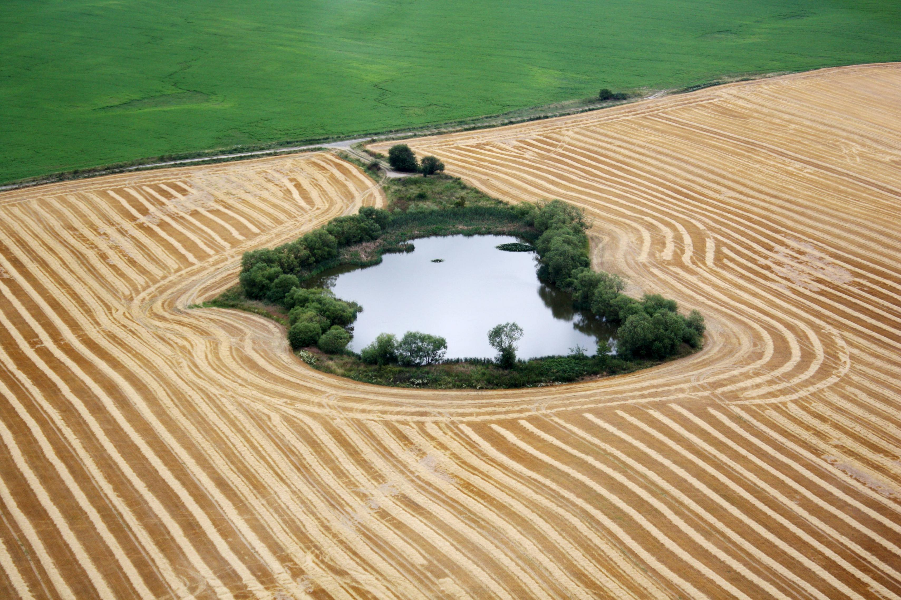

Neblahé prvenstvo v EÚ. Slovensko má až v 20% vyplatených eurofondov nezrovnalosti
Čo sa týka eurofondov, Slovensko si dlhodobo nevedie dobre. Jednak ich čerpáme neefektívne a zároveň v nich máme aj kopec nezrovnalostí. Čo sa týka platieb, suverénne najviac v únii. Teda aspoň podľa Európskeho úradu pre boj proti podvodom v skratke OLAF. Náš úrad pre investície tvrdí, že je to len preto, lebo poctivejšie nahlasujeme nezrovnalosti ako iní. OLAF vo svojej správe hodnotil aj colné podvody s Čínou.
Slovensko je vrámci Európskej únie úplne najhoršou krajinou čo sa týka vyplácania peňazí. "Nezrovnalosti sa týkajú takmer 20 percent z tých platieb z európskeho rozpočtu," uviedol Marián Koreň, editor portálu Euroactiv.sk. Nezrovnalosť pri eurofondoch je zjednodušene akékoľvek vedomé či nevedomé porušovanie legislatívy, ktoré vedie k neoprávnenému použitiu európskych peňazí.
Náš úrad pre investície pod Richardom Rašim vysvetľuje priepastný rozdiel medzi rokmi 2014 až 2018 problémami v operačnom programe výskumu a inovácií na ministerstve školstva za pôsobenia Petra Plavčana a ešte aj v inej metodike na Slovensku v porovnaní s ostatnými štátmi v únii. "Vysoké percento vzniká v dôsledku toho, že Slovenské kontrolné orgány sú veľmi aktívne a dôsledne kontrolujú celý proces už od samotného začiatku. Pritom ale každú chybu označujú automaticky za nezrovnalosť," vysvetľuje Karolína Tichá, hovorkyňa ÚPVII.
Európski vyšetrovatelia vo svojej správe opísali aj najnovšie zločinecké eurotrendy. "Je to zakladanie nastrčených spoločností a krytie falošných transakcií s cieľom získať peniaze z európskych fondov, ďalej obchádzanie colných pravidiel alebo podvody s propagáciou poľnohospodárskych výrobkov," menuje šéf OLAF Ville Itälä.
"Najväčšia a najzávažnejšia hranica je medzi Čínou a vašim domovom, respektíve podvodníkov z Číny," dodal Ernesto Bianchi, vedúci oddelenia vyšetrovania v rámci OLAF. Slovensku bola odporúčaná v ušlom cle doplatiť únii až 300 miliónov eur. Táto kauza stála minulý rok stoličku šéfa Finančnej správy Františka Imrezceho.

Podľa správy OLAF-u je najviac nezrovnalostí v Španielsku približne 11 000, na Slovensku je to 1649. Španielsko má ale 47 miliónov obyvateľov.
OLAF vyšetruje na východe Slovenska
Európsky úrad pre boj proti podvodom spustil rozsiahle vyšetrovanie poskytovania agro-dotácií na Slovensku. Patria sem aj známe prípady čerpania peňazí na parkovisko, poľné letisko či cudziu pôdu. Vo štvrtok boli prví farmári predvolaní ako svedkovia.
Postup a spôsob vyšetrovania prebieha v utajenom režime. Mnohí hlavní aktéri, ktorí sú podozriví z podvodu, budú zrejme vypočutí až po farmároch. "Nikto ma neoslovil ani o tom nič neviem, od vás to počuje prvýkrát," uviedla farmárka Ľubica Rošková.
Celý článok si prečítate TU.